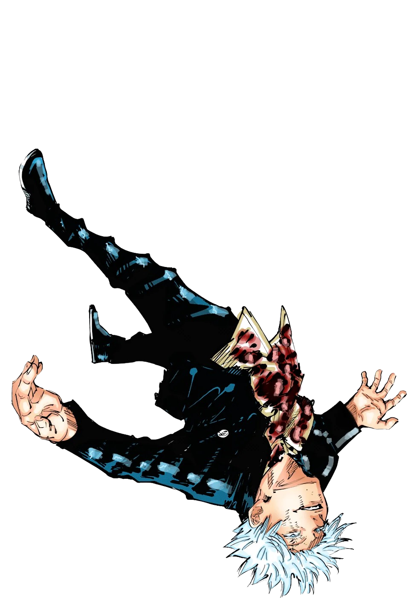

Jujutsu Kaisen
Ganhador do Crunchyroll Anime Awards 🏆

Jujutsu Kaisen
O anime mais famoso de 2023!
"Jujutsu Kaisen" é um anime e mangá que segue a história de Yuji Itadori, um estudante colegial com habilidades físicas notáveis. Após um encontro com um artefato amaldiçoado, Yuji se vê envolvido em um mundo de maldições, feitiçaria e exorcismo.
A trama se desenrola em um mundo onde maldições são entidades demoníacas que ameaçam a humanidade. Para combatê-las, existem feiticeiros chamados Jujutsu Sorcerers, que utilizam técnicas especiais para exterminar maldições e proteger as pessoas.

Expanda seu Domínio!
Vibre com a emoção de cada episódio dessa obra incrivel.
Conte com uma das melhores direções de animação da industria e personagens incriveis